先明确这次要跑通什么
本教程会搭建一个由需求分析师、后端研发工程师、代码评审员和测试工程师组成的简单团队，并把四个角色串进同一条 SOP。
建议准备一台已安装 Docker 与 Git 的 Linux 服务器或开发机，以及一个可供演示的 GitHub 仓库。仓库最好包含可直接执行的测试命令；本文示例使用 npm test。
先把平台跑起来
LoopForge 支持通过 Docker 快速部署。进入准备好的服务器或开发机，依次执行下面三条命令：
git clone https://github.com/Tencent/LoopForge.git
cd LoopForge
./start.sh启动脚本会自动完成环境检查、镜像拉取、数据库启动和初始化。当终端出现 ✓ LoopForge is running 时，说明平台已经启动成功。
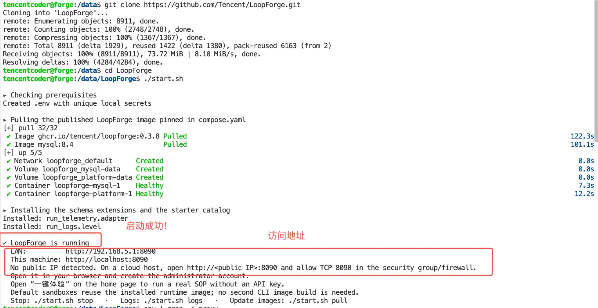
选择访问地址
- 当前机器访问：打开
http://localhost:8090，适用于浏览器和 LoopForge 在同一台机器上的情况。 - 局域网访问：使用终端输出的
LAN地址，例如http://192.168.5.1:8090。不同机器的局域网 IP 不同，以实际输出为准。 - 云主机访问：打开
http://<公网 IP>:8090。如果终端提示No public IP detected，需要自行填写公网 IP，并在安全组或防火墙中放通 TCP 8090。
创建团队账号
第一次打开 LoopForge 时，从登录页进入注册流程，创建首个账号。第一个创建的账号会自动成为平台管理员，拥有成员账号、平台管理员和通用模板等管理权限。
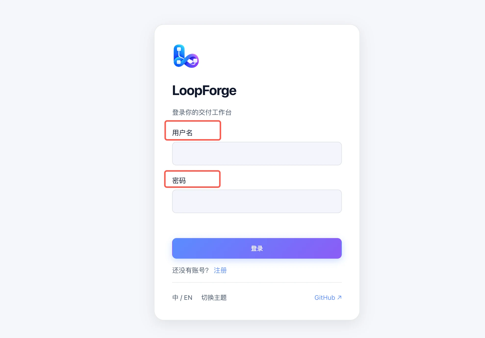
团队多人使用时，建议每个人使用自己的账号，不要共用同一个登录账号。后续成员可以通过两种方式加入：
- 自行注册：默认情况下，成员可以在登录页点击「注册」，创建自己的账号。
- 管理员创建：平台管理员进入「平台管理 → 成员账号」，填写用户名和初始密码，点击「创建账号」，再将登录信息交给对应成员。
后续创建的账号默认是普通成员。确实需要平台管理权限时，可以在创建账号时勾选「同时设为平台管理员」，或者之后在「平台管理 → 平台管理员」中添加。
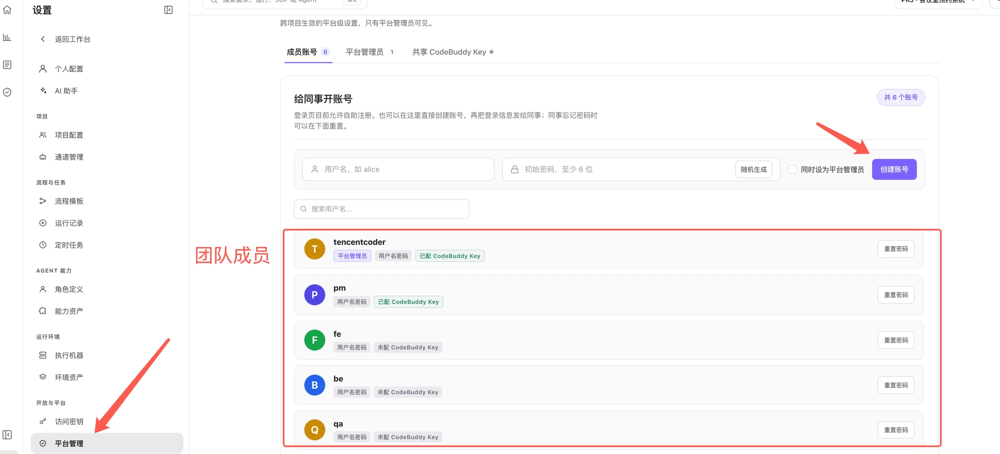
配置执行器与仓库凭证
账号创建完成后，进入左侧「个人配置」，在「个人凭证」区域点击「添加凭证」。先选择准备使用的执行器，页面会根据执行器显示对应配置项。
| 配置项 | 说明 |
|---|---|
| 执行器 | 选择准备使用的 Agent CLI |
| API Key | 填写对应服务签发的 Key |
| Base URL | 使用代理或自建模型网关时填写；不需要时保持默认 |
| 接口协议 | 部分执行器会显示，按模型服务支持的协议选择 |
确认信息后，点击「保存凭证」。每位成员都可以在自己的账号下配置凭证，彼此互不影响。运行 SOP 时，已经指定需求负责人的任务使用负责人的凭证；没有指定时，使用项目 Owner 的凭证。
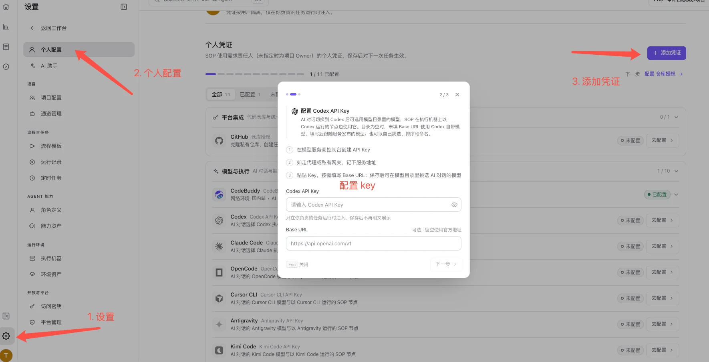
常用命令
平台运行后，还可以在 LoopForge 项目目录中使用下面这些命令进行日常维护：
| 操作 | 命令 |
|---|---|
| 启动 LoopForge | ./start.sh |
| 重启 LoopForge | ./start.sh restart |
| 停止 LoopForge | ./start.sh stop |
| 查看运行日志 | ./start.sh logs |
| 拉取最新镜像 | ./start.sh pull |
至此，LoopForge 已经完成部署，团队账号和执行器凭证也已经准备好。下一步开始建立团队的工作现场。
创建第一个团队项目
项目用于集中管理团队成员、代码仓库、需求、角色、SOP 和运行记录。进入左侧「项目配置」，点击「＋ 新建项目」。
填写基本信息
| 配置项 | 说明 |
|---|---|
| 项目名称 | 团队用于识别项目的名称，例如“审计日志演示项目” |
| 品牌色 | 用于项目头像和标签，可以保持默认 |
| 项目说明 | 简要说明项目负责什么；运行时会作为上下文提供给 Agent |
| 默认 SOP | 新建需求时默认选择的流程；此时可以先使用系统预选项 |
填写项目名称后，点击「创建并继续」。系统会自动生成项目标识和项目 Key，创建后无需手动维护。
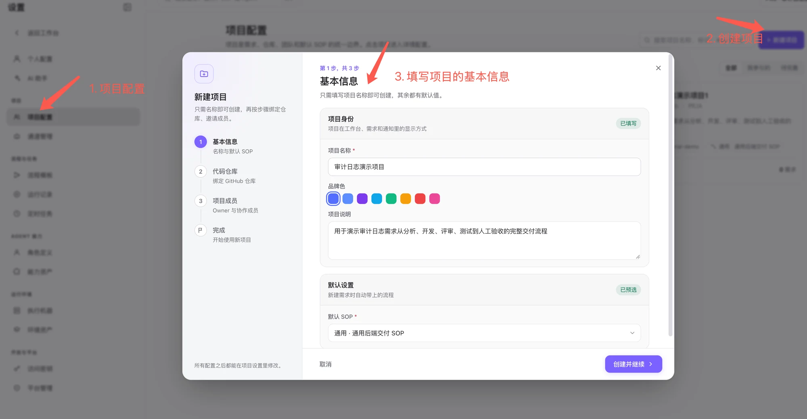
绑定代码仓库
进入「代码仓库」步骤后，先完成 GitHub 授权，再选择或粘贴项目仓库地址。公开仓库可以直接填写地址；私有仓库必须确保当前账号有访问权限。
| 配置项 | 说明 |
|---|---|
| GitHub 仓库地址 | 填写项目的代码仓库地址 |
| 主分支 | 通常填写 main 或 master |
| 集成分支 | 可选，用于检查多条任务分支之间的合并冲突 |
点击「＋ 添加仓库」完成绑定。项目绑定的第一个仓库会自动成为默认仓库，后续创建需求时会默认选择它。
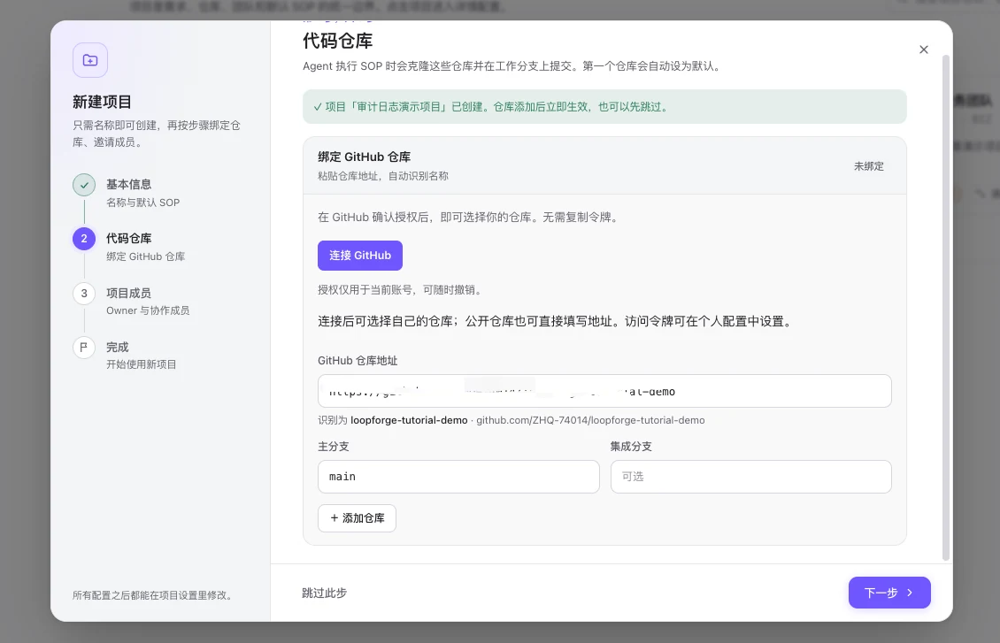
设置 Owner 和项目成员
Owner 是项目的默认负责人。先选择 Owner，再按需要添加其他团队成员。这里的“成员”和后面配置的“角色”不是一回事：
- 项目成员：真实的团队账号，可以查看和推进项目内的需求。
- 角色：供 Agent 执行任务时使用的工作定义。
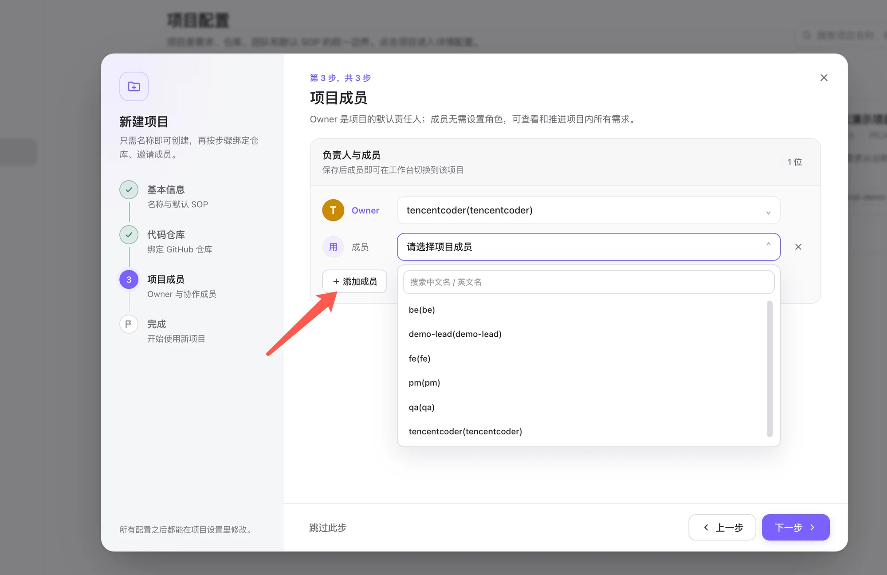
成员配置完成后，点击「下一步」。暂时不需要接入 TAPD 时，可以跳过该步骤并完成项目创建。创建完成后，通过页面顶部的项目切换器进入刚创建的项目；后续角色、SOP、需求和运行记录都会归属在这里。
配置团队的四个角色
进入左侧「角色定义」，点击「＋ 新建角色」。本教程创建四个简单角色，分别负责需求、实现、评审和测试。
| 角色 | 选择的起点 | 主要职责 | 必交产物 |
|---|---|---|---|
| 需求分析师 | 空白 | 梳理范围和验收标准 | requirement.md |
| 后端研发工程师 | 开发实现 | 修改代码并完成自测 | implementation-report.md |
| 代码评审员 | 独立评审 | 独立检查代码、权限和风险 | review-report.md |
| 测试工程师 | 独立测试 | 设计并执行测试 | test-report.md |
先配置角色身份
新建角色时，先选择一个起点，再填写显示名称、职责、CLI 和模型。不同角色可以使用不同的执行器和模型；第一次体验也可以全部使用相同配置，先把流程跑通。
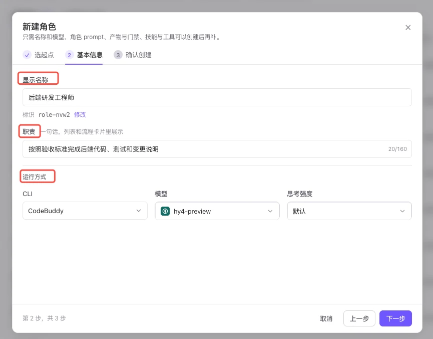
写清角色任务
角色 Prompt 要明确它需要读取什么、按什么标准工作、不能做什么，以及最后必须留下什么产物。平台会自动提供需求输入、仓库信息和上游产物，也可以使用页面上方按钮插入 {{input}}、{{repository}}、{{artifacts}} 和 {{feedback}} 等变量。
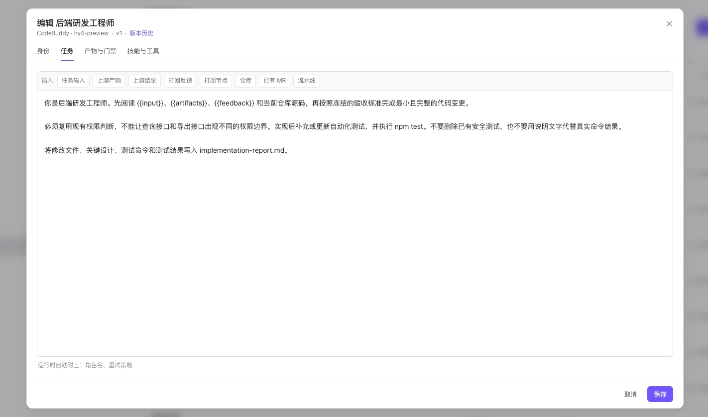
需求分析师 Prompt
你是需求分析师。根据本次需求和代码仓库，明确需求范围、非目标、边界条件、数据权限和可验证的验收标准。
信息不足时明确列出假设，不要修改业务代码。最终将分析结果写入 requirement.md。后端研发工程师 Prompt
你是后端研发工程师。先阅读 {{input}}、{{artifacts}}、{{feedback}} 和当前仓库源码，再按照冻结的验收标准完成最小且完整的代码变更。
必须复用现有权限判断，不能让查询接口和导出接口出现不同的权限边界。实现后补充或更新自动化测试，并执行 npm test。不要删除已有安全测试，也不要用说明文字代替真实命令结果。
将修改文件、关键设计、测试命令和测试结果写入 implementation-report.md。代码评审员 Prompt
你是独立代码评审员。根据需求验收标准和仓库改动检查正确性、权限边界、异常处理、兼容性与测试覆盖。不要修改业务代码，也不要因为实现角色声称测试通过就直接放行。
存在阻断问题时，写清对应文件、问题影响和修复建议，并判定不通过。将评审结论写入 review-report.md。测试工程师 Prompt
你是独立测试工程师。根据验收标准和代码改动设计并执行测试，覆盖正常路径、边界条件和越权访问。保留真实命令、返回结果与失败证据，不要只复述开发报告。
将测试范围、测试命令、结果、失败证据和最终结论写入 test-report.md。配置产物与门禁
打开角色的「产物与门禁」页面，在「要交的文件」中添加对应产物并勾选「必须交」。再添加一条验收命令，检查文件是否真实生成。
| 角色 | 验收命令 |
|---|---|
| 需求分析师 | test -s requirement.md |
| 后端研发工程师 | test -s implementation-report.md |
| 代码评审员 | test -s review-report.md |
| 测试工程师 | test -s test-report.md |
检查范围选择「Run 工作区」。角色口头说“已经完成”不算通过，只有真正生成约定的产物并通过检查，流程才能进入下一步。
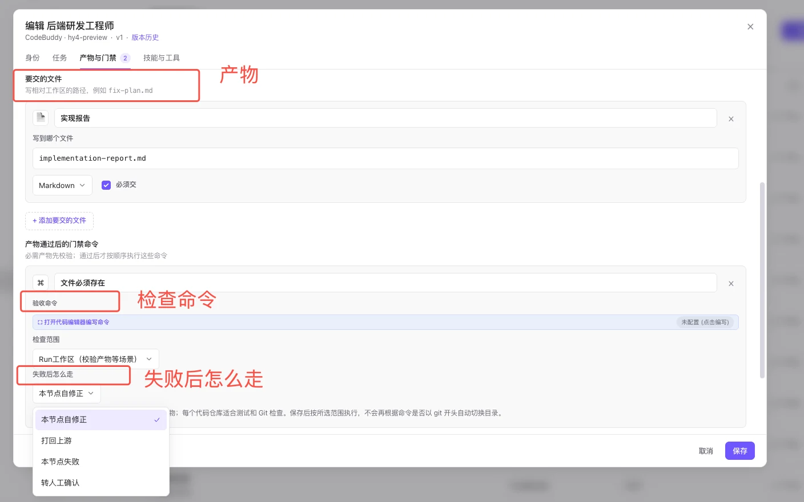
第一次配置时，「技能与工具」可以保持默认。等流程跑通后，再按团队需要给角色绑定规则、Skills 或 MCP。
把四个角色编排成 SOP
角色创建完成后，进入左侧「流程模板」，点击「＋ 新建 SOP」。在「流程信息」中填写名称、负责人、标签和流程说明，然后选择「从空白开始」，进入设计器。
| 配置项 | 建议填写 |
|---|---|
| 流程名称 | 后端需求交付 SOP |
| 负责人 | 项目 Owner 或团队负责人 |
| 标签 | 后端、需求、研发 |
| 流程说明 | 从需求分析到开发、评审、测试和负责人验收 |
| 运行沙箱 | 选择当前项目可用的默认沙箱 |
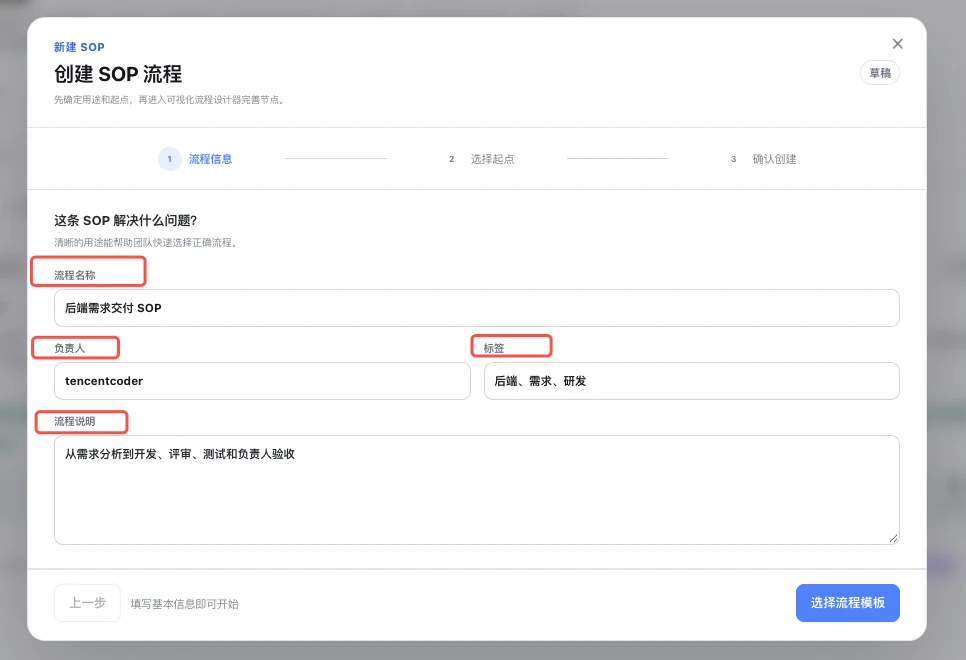
添加并连接节点
从左侧节点库中依次添加：
需求分析师 → 后端研发工程师 → 代码评审员 → 测试工程师 → 运行测试 → 负责人验收
- 前四个是角色节点，负责需要判断和产出内容的工作；
- 「运行测试」是脚本节点，用真实退出码判断测试是否通过；
- 「负责人验收」是人工门禁，在最终结果交付前由人做决定。
选中「运行测试」，脚本语言选择 Shell，执行范围选择每个代码仓库，脚本内容填写项目真实使用的测试命令。Node.js 示例：
set -e
npm test其他项目应替换为自己的命令，例如 go test ./... 或 pytest。选中「负责人验收」，在「需要确认什么」中填写：
检查需求验收标准、代码改动、评审报告和测试结果，确认本次交付是否可以通过。配置失败打回
分别选中「代码评审员」「测试工程师」和「运行测试」，把失败后的处理方式设置为打回「后端研发工程师」。建议首次体验最多返工 3 轮，并选择只修失败项。也可以为「负责人验收」设置同一打回目标。
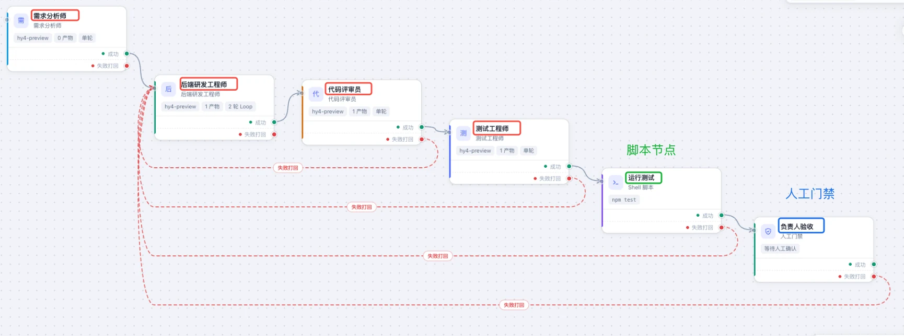
打开「配置检查」，确认没有阻止运行的问题，然后点击「保存」并「发布版本」。如果希望新需求默认使用这条流程，可以回到「项目配置」，把默认 SOP 改为刚发布的「后端需求交付 SOP」。
发起第一条真实需求
进入左侧「需求列表」，点击「新建需求」，填写一条范围适中的真实需求。例如：
为审计日志增加按操作人筛选的能力，并支持将筛选结果导出为 CSV。
普通成员只能查询和导出自己项目内的数据。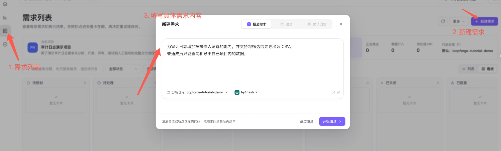
需求分析会读取所选仓库的代码，把自然语言需求整理为改动范围、非目标和可验证的验收标准。
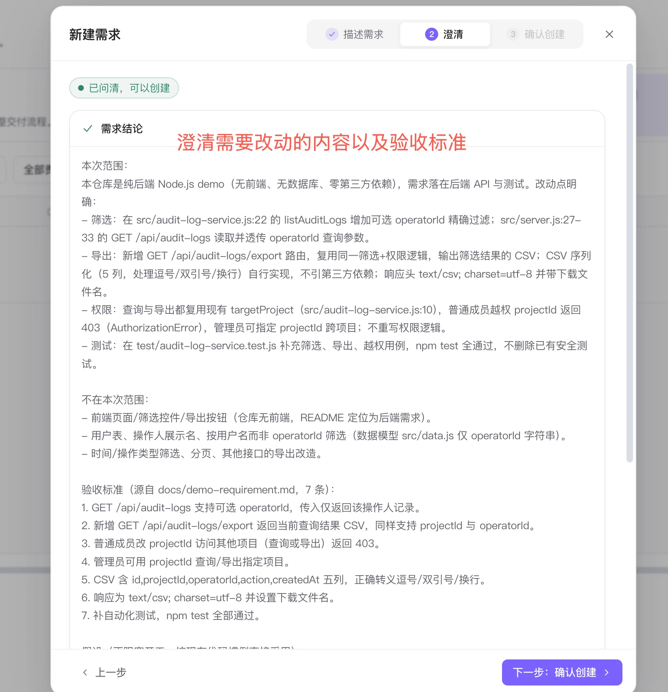
进入确认页后，检查需求标题、需求结论、代码仓库和 SOP 流程。选择刚刚发布的「后端需求交付 SOP」，再点击「创建并启动 SOP」。
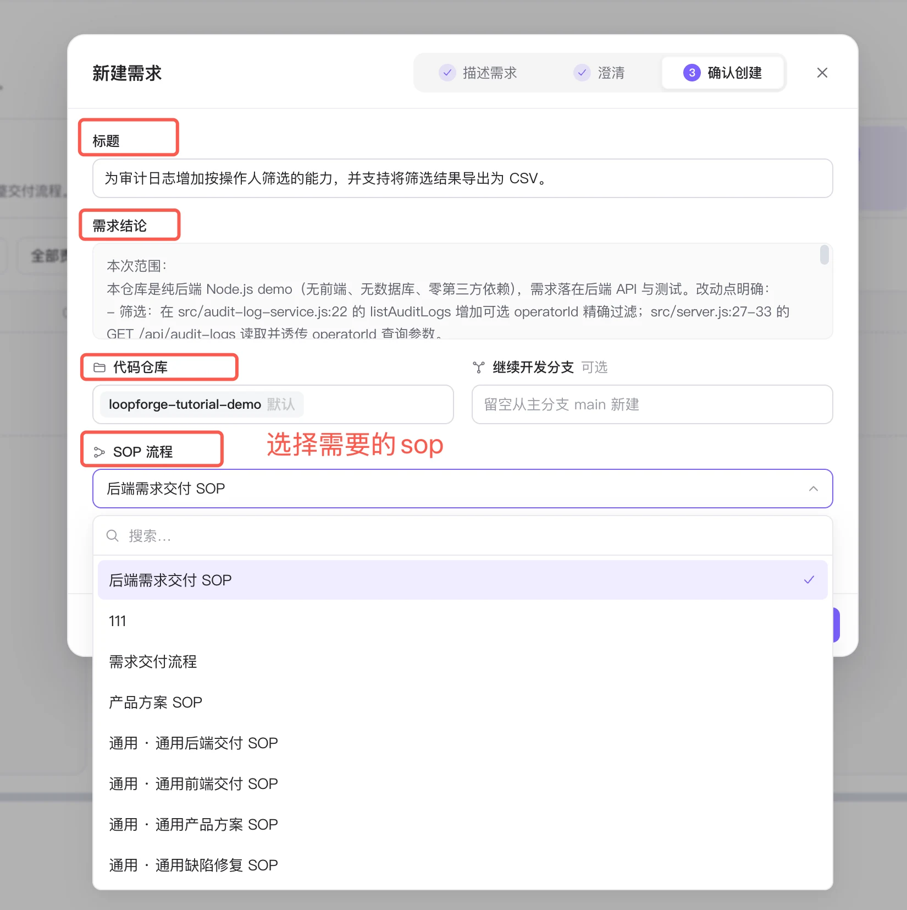
查看运行并完成验收
SOP 启动后，页面会进入运行详情。六个节点按照配置顺序推进：
- 需求分析师输出范围和验收标准；
- 后端研发工程师修改代码并提交实现报告；
- 代码评审员独立检查代码、权限和测试；
- 测试工程师按验收标准执行独立测试；
- 脚本节点再次运行确定性的测试命令；
- 流程停在负责人验收，等待人工决定。
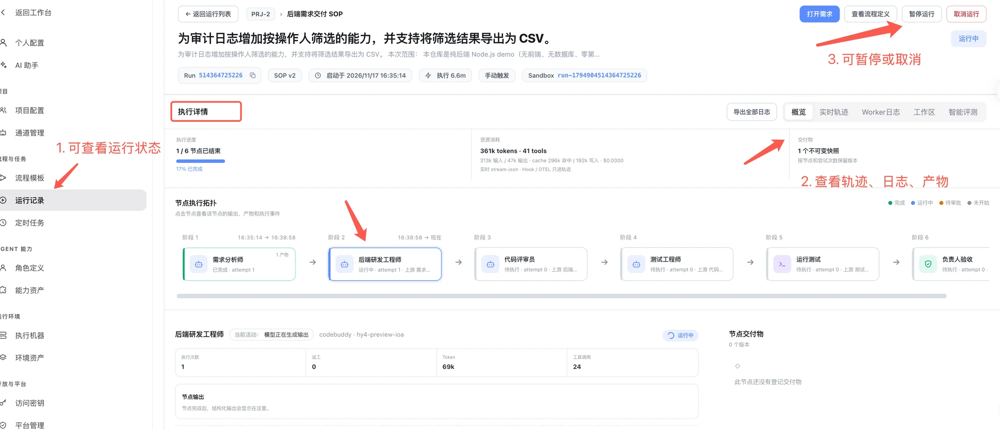
如果评审或测试未通过，系统会把失败原因和具体意见带回后端研发工程师，修复后重新经过评审和测试。返工不需要人手动转述，反馈会沿着配置好的路径继续传递。
需要人工处理时，任务会进入「待我确认」。负责人可以：
- 选择「确认通过，继续下游」；
- 补充信息，重跑当前节点；
- 退回上游「后端研发工程师」，并重跑后续节点。
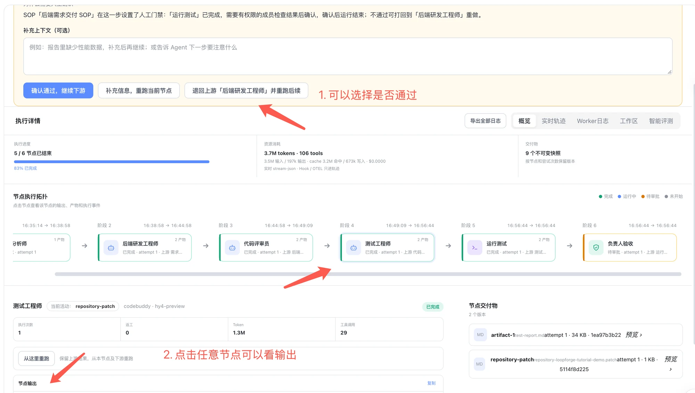
第一个团队 Loop 已经跑通
至此，团队完成了从部署平台、创建账号和项目，到配置角色、编排 SOP、发起需求、自动返工和人工验收的完整流程。接下来可以从真实的小需求开始，根据每次运行留下的记录继续调整角色规则、门禁和打回路径。